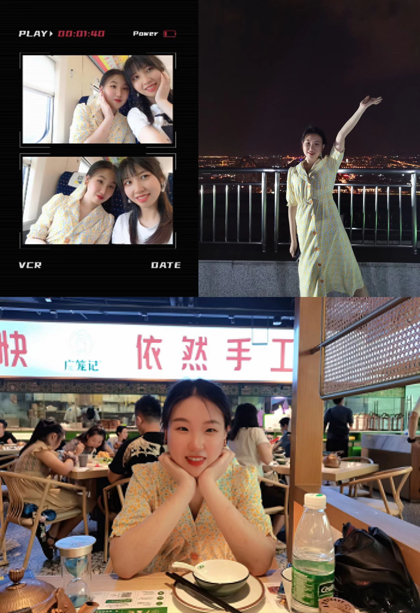
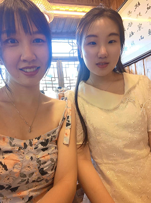

“时间中的我们”
这是我们一起去零陵古城玩的一天
“好吃的”
一起做蛋糕的合照，不过那蛋糕确实还蛮好吃，啥时候再一起去鸭
这是我们吃海底捞偷偷拍的你，你应该不知道吧哈哈哈哈
“三个七夕节”
这是我们两一起连着过的三个七夕节的合照，期待以后每一个七夕都能跟你过哟
“记录与你每一刻”
这是我们两一起出去玩拍的合照和你唱歌的样子 还有你抓娃娃的样子
“摩天轮与服务员”
这是我们在摩天轮拍的合照，我永远记着咱两在摩天轮不怕的样子，lmd跟彪哥说着他们两坐在摩天轮里面害怕的场景哈哈哈 啥时候我们再一起去坐比较安全的摩天轮 还有去吃烧烤服务员给我们拍的合照 彪哥真的像服务员
“照片与风格”

去柳州最高的楼看夜景给你拍的照片 和咱两公认拍的非常满意的合照
啊啊啊，这张的你好可爱还港风
“拉弓射箭”
这是你射箭的样子 只有我们四个人合照才有你的正脸照 我给你拍的个人照太丑了不好意思放进来
“还是合照”

这是咱两今年去凤凰拍的合照还想跟你一起出去旅游 这里面每一张都是跟你的出去玩合照，想念跟你之前的每一时刻嘻嘻 也期待以后跟你的每一时刻，话说啥时候回来鸭好想你回来跟我玩呢
还有话没说哦→